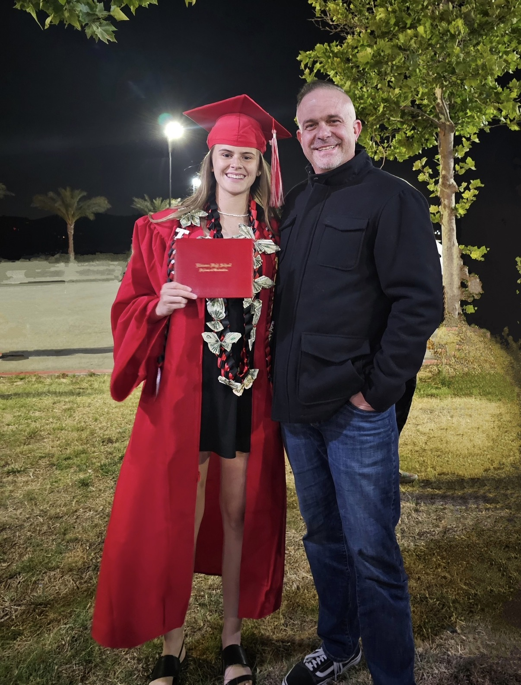
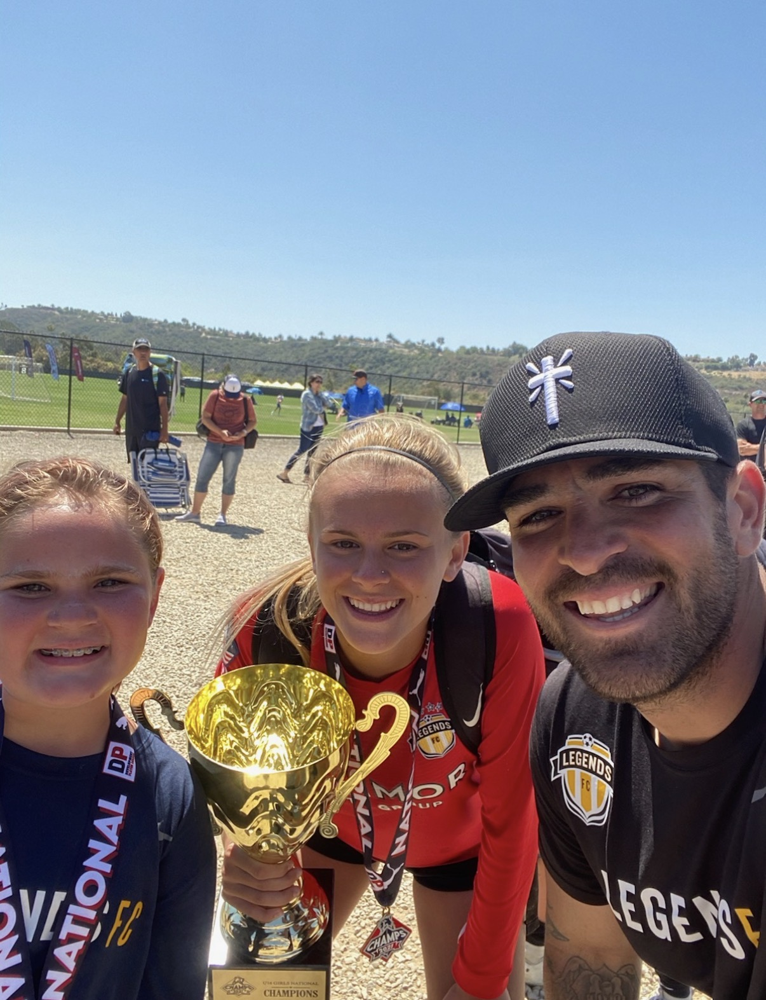
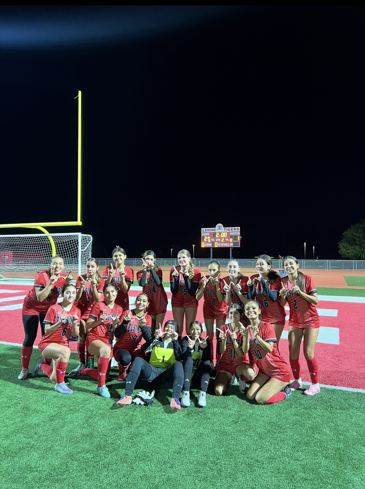
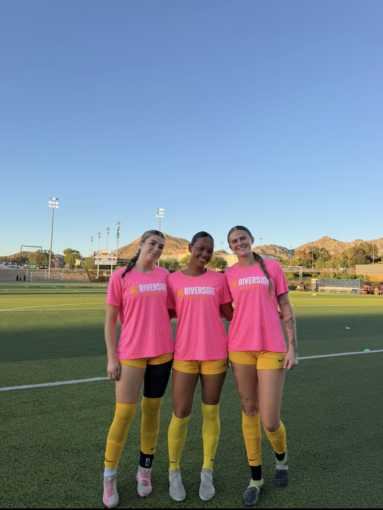

I am currently a student at the University of California, Riverside, majoring in Global and Community Health. Alongside my academic studies, I am an NCAA Division I women's soccer student-athlete. Balancing academics and athletics has taught me the importance of time management, dedication, teamwork, and leadership. Through my experiences, I have developed a strong passion for health, wellness, and nutrition, particularly the role that nutrition plays in athletic performance and overall well-being.
In addition to my academic and athletic responsibilities, I have gained valuable professional experience working as an after-school Program Leader. In this role, I work closely with elementary school students, helping create a positive, supportive, and engaging learning environment. My responsibilities include supervising students, organizing educational and recreational activities, and encouraging teamwork and participation. Working with children has strengthened my communication, patience, adaptability, and problem-solving skills. I have learned how important it is to be a positive role model and create an environment where individuals feel supported and encouraged to succeed. These experiences have helped me grow both personally and professionally, while also reinforcing my passion for helping others and making a meaningful difference in my community.
My long-term professional goal is to become a Registered Dietitian, with a particular interest in sports nutrition and helping athletes improve their performance through proper nutrition. As a collegiate athlete, I have experienced firsthand how important nutrition, recovery, and overall wellness are when it comes to maintaining a healthy and active lifestyle. These experiences have inspired me to pursue a career where I can combine my passion for athletics with my interest in health sciences. Through my studies in Global and Community Health, I hope to gain a deeper understanding of how nutrition, education, and access to healthcare influence individuals and communities. I am especially interested in helping athletes understand how proper nutrition can support their performance, prevent injuries, and promote long-term health. As I continue my education, I look forward to gaining more hands-on experience, expanding my knowledge, and developing the skills necessary to make a positive impact in the field of nutrition and wellness.
• Supervise and support elementary school students.
• Organize educational and recreational activities.
• Encourage teamwork and positive behavior.
• Develop leadership and communication skills.
• Compete as a Division I women's soccer student-athlete.
• Balance demanding athletic and academic schedules.
• Demonstrate leadership, discipline, and teamwork.
• Participate in team training, competitions, and athletic development.
• Develop time management and communication skills.
• Assist the head coach in organizing and leading varsity girls' soccer practices.
• Help student-athletes develop technical skills, teamwork, and game strategies.
• Provide guidance, encouragement, and mentorship to high school athletes.
• Promote sportsmanship, discipline, and a positive team environment.
• Support player development and preparation for competitive matches.



